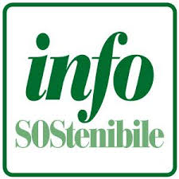

Project Work: Infosostenibile
Analisi statistica ed editoriale sulle abitudini ecologiche ed economiche degli studenti del liceo.

work Descrizione Attività
Collaborazione diretta con la redazione della rivista trimestrale Infosostenibile (giornalista, esperto di infografiche e redattrice) per la produzione di un articolo e di un supporto grafico statistico basati sui dati d'istituto.
reorder Fasi del Percorso
Sondaggio Preliminare
Sviluppo del questionario digitale condiviso con gli studenti del liceo (coordinamento Prof. Sgrignoli).
Lezione Tecnica
Formazione con gli esperti sui criteri di scrittura giornalistica e regole di data visualization.
Analisi e Focus
Lavoro di gruppo sul trend specifico: frequenza ed impatto del lavaggio dei jeans.
Elaborazione Dati
Calcolo del risparmio idrico ed economico tramite tabelle pivot Excel e stesura dell'articolo.
analytics Competenze Sviluppate
| Competenza | Applicazione Pratica |
|---|---|
| edit_note Scrittura Media | Tecniche di redazione giornalistica e abilità nel catturare l'interesse del lettore. |
| insights Data Synthesis | Selezione, sintesi ed estrapolazione delle evidenze statistiche più significative. |
| legend_toggle Infografiche | Progettazione grafica finalizzata a rendere i dati numerici immediati e accessibili. |
| groups Team Working | Collaborazione cooperativa all'interno del gruppo e divisione strategica dei ruoli. |
history_edu Valutazione dell'Esperienza
L'attività ha stimolato una forte presa di coscienza sulle responsabilità ecologiche collettive, dimostrando che la sostenibilità si traduce in micro-scelte quotidiane e dati concreti.
Il percorso ha arricchito il mio bagaglio di competenze trasversali, offrendo ottimi spunti critici e metodologici per i collegamenti interdisciplinari con l'Agenda 2030 in sede di colloquio d'esame.